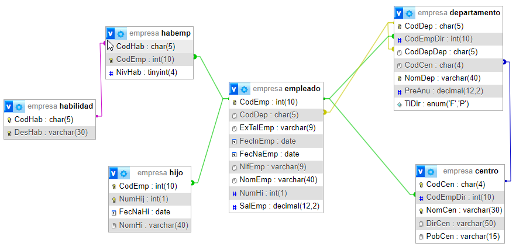

Subconsultas. Optimización.
Propuesta didáctica
En esta unidad finalizaremos el RA3 "Consulta la información almacenada en una base de datos empleando asistentes, herramientas gráficas y el lenguaje de manipulación de datos", centrándonos en el uso de subconsultas y los conceptos relacionados con el rendimiento de las consultas, incluyendo el uso de índices, y seguiremos con el RA4 "Modifica la información almacenada en la base de datos utilizando asistentes, herramientas gráficas y el lenguaje de manipulación de datos" para incluir en una tabla el resultado de una consulta.
Criterios de evaluación
- CE3f: Se han realizado consultas con subconsultas.
- CE3g: Se han realizado consultas que implican múltiples selecciones.
- CE3h: Se han aplicado criterios de optimización de consultas.
- CE4c: Se ha incluido en una tabla la información resultante de la ejecución de una consulta.
Contenidos
Realización de consultas:
- Subconsultas.
- Combinación de múltiples selecciones.
- Optimización de consultas.
Tratamiento de datos:
- Inserción, borrado y modificación de registros.
- Subconsultas y composiciones en órdenes de edición.
Cuestionario inicial
- ¿Para qué sirve una subconsulta?
- ¿Qué tipos de subconsultas existen?
- ¿Qué operadores podemos utilizar en una subconsulta?
- ¿Es mejor hacer un
JOINo realizar una subconsulta? - ¿Qué diferencia una subconsulta anidada de una correlacionada?
- ¿Puede ser una subconsulta anidada y correlacionada?
- ¿Qué es una CTE?
- ¿En qué se diferencia una CTE de una vista?
- ¿Podemos emplear CTEs en operaciones DML?
- ¿Para qué sirve la sentencia
CREATE TABLE ... AS SELECT? ¿Qué usos tiene? - ¿Para qué sirve la sentencia
INSERT SELECT? ¿Qué usos tiene? - ¿Puedo utilizar una subconsulta dentro de la cláusula
WHEREen una operación de modificación o borrado? ¿Puedes proporcionar un ejemplo? - ¿Qué es un índice?
- ¿Cuándo no es recomendable crear un índice? ¿En qué operaciones influye?
- ¿Qué tipos de índices conoces?
- ¿Cómo puedo saber si en una consulta determinada se está utilizando un índice o no?
Programación de Aula (13h)
Esta unidad es la octava, siendo la última del bloque de consultas, impartiéndose a mediados de la segunda evaluación, con una duración estimada de 13 sesiones lectivas:
| Sesión | Contenidos | Actividades | Criterios trabajados |
|---|---|---|---|
| 1 | Subconsultas | ||
| 2 | Operador IN | AC801 | CE3f |
| 3 | Operadores ALL / ANY / EXISTS | AC802 | CE3f |
| 4 | Tablas derivadas. CTE | AC803 | CE3f, CE3g |
| 5 | Supuesto subconsultas | PR806 | CE3f, CE3g |
| 6 | SELECT y DDL/DML | AC807 | CE4c |
| 7 | Optimización de consultas | ||
| 8 | Supuesto optimización | AC809 | CE3h |
| 9 | Simulacro examen | PR812 | CE3a, CE3b, CE3c, CE3d, CE3e, CE3f, CE3g |
| 10 | Exposición del Reto | PY813 | CE3f, CE3g, CE3h |
| 11 | Prueba escrita I | PO814 | RABD.2, RABD.3, RABD.4 |
| 12 | Prueba escrita II | ||
| 13 | Revisión prueba escrita |
Subconsultas
Hasta ahora hemos creado consultas, ya sea empleando una o más tablas, pudiendo agrupar los resultados para realizar y filtrar los datos.
Otra posibilidad que tenemos es crear subconsultas, esto es, una consulta dentro de otra (dentro de la cláusula WHERE o HAVING) que funcione a modo de expresión, ofreciendo más posibilidades semánticas a SQL. La sentencia externa puede ser una SELECT, DELETE, INSERT o UPDATE.
El formato general más usado (al aplicarse sobre el filtrado en WHERE) es similar a:
SELECT ... FROM ...
WHERE expresión operador (
SELECT columna FROM tabla
WHERE condición)
[ORDER BY col-1 [,col-2]...];
Tenemos tres tipos de subconsultas:
- De fila: devuelven más de una columna pero una única fila.
- De tabla: devuelven una o varias columnas y cero o varias filas.
- Escalares: devuelven una columna y una fila.
Todas las subconsultas deben cumplir:
- La cláusula
ORDER BYno puede ir en una subconsulta. - A excepción del operador
EXISTS, deben producir una sola columna de datos como resultado. - Una subconsulta puede contener a otra subconsulta y ésta a otra y así N veces. El límite lo fija cada SGBD.
Escalares
Las subconsultas escalares son aquellas que devuelven un único valor (una sola fila y una única columna), lo que facilita su uso en aquellas ocasiones en las que comparamos con un valor.
Así pues, un ejemplo muy sencillo sería obtener el empleado con el salario más alto:
--- Salario más alto
select max(SalEmp) from empleado;
--- Empleado con el salario más alto
select NomEmp from empleado
where SalEmp =
(select max(SalEmp) from empleado);
¿Empleado que más cobra?
En el ejemplo anterior, hemos recuperado de la tabla empleado aquellos empleados cuyo salario sea igual al mayor salario. La pregunta es, ¿Cuántos empleados habrá recuperado? ¿Sería correcto decir que es el empleado que más cobra? ¿Qué pasaría si hubiera dos empleados con el mismo salario más alto? ¿Cómo podríamos recuperar ambos empleados?
Si recuerdas, cuando aprendimos a ordenar y restringir la cantidad de resultados, vimos cómo podemos deshacer los empates haciendo uso de la cláusula FETCH FIRST n ROWS WITH TIES:
select NomEmp, SalEmp from empleado
ORDER BY SalEmp ASC
FETCH FIRST 1 ROW WITH TIES;
O los empleados que tienen más hijos:
-- Cantidad de hijos máximo
select max(NumHi) from empleado;
-- Empleados con más hijos
select NomEmp from empleado
where NumHi =
(select max(NumHi) from empleado);
En las subconsultas escalares podemos emplear los operadores de relación: =, <, >, <>, >= y <=. Así pues, por ejemplo, podemos recuperar los empleados con menos hijos que Saladino Mandamás, Augusto:
select NomEmp from empleado
where NumHi <
(select NumHi from empleado where NomEmp = "Saladino Mandamás, Augusto");
Por supuesto, también podemos realizar la subconsulta dentro de la cláusula HAVING, obteniendo el nombre y el gasto en nómina de sus empleados de aquellos departamentos en los que el gasto en nóminas sea superior al del empleado que más cobra en toda la empresa:
select d.NomDep, sum(e.SalEmp)
from departamento d join empleado e on d.CodDep = e.CodDep
group by d.NomDep
HAVING sum(e.SalEmp) >
(SELECT max(SalEmp) from empleado);
-- +----------------------+---------------+
-- | NomDep | sum(e.SalEmp) |
-- +----------------------+---------------+
-- | Producción Zona Sur | 7600000.00 |
-- | Ventas Zona Sur | 8400000.00 |
-- +----------------------+---------------+
-- 2 rows in set (0.054 sec)
Correlacionadas
Una subconsulta correlacionada es una subconsulta que depende de una columna o valor de la consulta principal para ser evaluada. Esto significa que la subconsulta se ejecuta repetidamente, una vez para cada fila de la consulta principal, utilizando valores específicos de esa fila.
Se utilizan para calcular valores relacionados de la subconsulta con la consulta externa. Veamos un ejemplo.
Mediante la siguiente consulta, obtenemos el nombre y el salario de aquellos empleados que ganan más que la media de todos los empleados:
select NomEmp, SalEmp from empleado where SalEmp >
(select avg(SalEmp) from empleado);
Pero ¿y si queremos restringirlo a aquellos que ganan más que sus compañeros del mismo departamento? En ese caso, relacionamos la subconsulta con la consulta externa, añadiendo una restricción en la cláusula WHERE uniéndolas por el campo que comparten:
select NomEmp, SalEmp from empleado e where SalEmp >
(select avg(SalEmp) from empleado WHERE CodDep = e.CodDep);
La consulta principal selecciona los datos de la tabla empleado, y para cada fila, la subconsulta calcula el salario promedio de los empleado del mismo departamento (columna CodDep).
Anidadas
Por supuesto, una consulta puede contener varias subconsultas.
Por ejemplo, si quisiéramos ver si existe algún empleado que sea el que más cobra y tenga la mayor cantidad de hijos, podríamos hacer:
select NomEmp, SalEmp, NumHi from empleado where
SalEmp = (select max(SalEmp) from empleado) and
NumHi = (select max(NumHi) from empleado);
-- No obtiene ningún resultado
Si queremos que se compare con los compañeros del mismo departamento, correlacionamos las subconsultas:
select NomEmp, SalEmp, NumHi from empleado e where
SalEmp = (select max(SalEmp) from empleado where CodDep = e.CodDep) and
NumHi = (select max(NumHi) from empleado where CodDep = e.CodDep);
-- Recupera 6 empleados
También podemos anidar una subconsulta dentro de otra. Por ejemplo, si queremos recuperar el empleado que más cobra y que trabaja en el departamento con el presupuesto más alto, podríamos hacer:
select NomEmp, SalEmp, CodDep from empleado e where
SalEmp = (select max(SalEmp) from empleado where CodDep =
(select CodDep from departamento order by PreAnu desc limit 1));
De fila
Las subconsultas de fila son aquellas que devuelven una única columna de una o más filas.
Para ello, emplea los operadores IN, ANY, ALL o EXISTS.
IN
Si quisiéramos recuperar los departamentos que hay en Murcia podríamos hacer un join para recuperar la información. Si queremos utilizar una subconsulta, podríamos pensar que podríamos por un lado recuperar los códigos de centro de Murcia, y luego obtener los nombres de sus departamentos:
select NomDep from departamento where CodCen =
(select CodCen from centro where PobCen='Murcia');
El problema es que la subconsulta devuelve más de un valor, ya que podemos tener más de un centro en Murcia, y por ende, el resultado obtenido bien nos puede dar un error (dependiendo del SGBD) u obtener unos datos incorrectos.
Cuando la subconsulta devuelve más de un posible valor, en vez de comparar mediante el operador igualdad, usaremos el operador [NOT] IN:
select NomDep from departamento where CodCen IN
(select CodCen from centro where PobCen='Murcia');
-- +--------------------------+
-- | NomDep |
-- +--------------------------+
-- | Dirección General |
-- | Investigación y Diseño |
-- +--------------------------+
-- 2 rows in set (0.002 sec)
Autoevaluación
¿Y si queremos obtener los departamentos que no están en Murcia? ¿Podemos realizarlo del mismo modo con join que mediante subconsultas?
ANY
También podemos emplear el operador ANY, el cual devuelve verdadero si la comparación se cumple para alguno de los valores resultantes de la subconsulta.
Podemos reescribir la consulta anterior mediante ANY (anteponiendo el operador relacional que necesitemos):
select NomDep from departamento where CodCen = ANY
(select CodCen from centro where PobCen='Murcia');
-- +--------------------------+
-- | NomDep |
-- +--------------------------+
-- | Dirección General |
-- | Investigación y Diseño |
-- +--------------------------+
-- 2 rows in set (0.002 sec)
Otro ejemplo de su uso. La siguiente consulta recupera los nombres y departamentos de los empleados cuyo sueldo es superior a alguno de sus compañeros de departamento, haríamos:
select NomEmp, CodDep from empleado e
where SalEmp > ANY (
select SalEmp from empleado where CodDep=e.CodDep);
-- +-------------------------+--------+
-- | NomEmp | CodDep |
-- +-------------------------+--------+
-- | Monforte Cid, Roldán | VENZS |
-- | Forzado López, Galeote | PROZS |
-- | Mascullas Alto, Eloísa | PROZS |
-- | Mando Correa, Rosa | PROZS |
-- +-------------------------+--------+
-- 4 rows in set (0.002 sec)
Cabe destacar que estamos enlazando la consulta interna (la subconsulta) con la consulta externa para que muestre los empleados que tienen el mismo departamento.
Si comparamos el resultado con todos los empleados, podemos ver que únicamente ha seleccionado a aquellos empleados que tienen algún compañero que cobra menos que ellos, descartando aquellos departamentos que sólo tienen un empleado:
select NomEmp, CodDep, SalEmp from empleado;
-- +-----------------------------+--------+------------+
-- | NomEmp | CodDep | SalEmp |
-- +-----------------------------+--------+------------+
-- | Saladino Mandamás, Augusto | DIRGE | 7200000.00 |
-- | Manrique Bacterio, Luisa | IN&DI | 4500000.00 |
-- | Monforte Cid, Roldán | VENZS | 5200000.00 |
-- | Topaz Illán, Carlos | VENZS | 3200000.00 |
-- | Alada Veraz, Juana | ADMZS | 6200000.00 |
-- | Gozque Altanero, Cándido | JEFZS | 5000000.00 |
-- | Forzado López, Galeote | PROZS | 1600000.00 |
-- | Mascullas Alto, Eloísa | PROZS | 1600000.00 |
-- | Mando Correa, Rosa | PROZS | 3100000.00 |
-- | Mosc Amuerta, Mario | PROZS | 1300000.00 |
-- +-----------------------------+--------+------------+
-- 10 rows in set (0.001 sec)
Así pues, mediante ANY estamos obligando a que haya un registro que cumpla la condición de la subconsulta.
ALL
Al principio de la unidad obtuvimos el empleado que tenía el salario más alto:
select NomEmp, SalEmp, CodDep from empleado
where SalEmp =
(select max(SalEmp) from empleado);
-- +-----------------------------+------------+--------+
-- | NomEmp | SalEmp | CodDep |
-- +-----------------------------+------------+--------+
-- | Saladino Mandamás, Augusto | 7200000.00 | DIRGE |
-- +-----------------------------+------------+--------+
-- 1 row in set (0.000 sec)
Si quisiéramos obtener los mismos datos, pero del empleado que más cobra de cada departamento, necesitamos conectar la subconsulta con la consulta externa:
select NomEmp, SalEmp, CodDep from empleado e
where SalEmp =
(select max(SalEmp) from empleado where CodDep=e.CodDep);
-- +-----------------------------+------------+--------+
-- | NomEmp | SalEmp | CodDep |
-- +-----------------------------+------------+--------+
-- | Saladino Mandamás, Augusto | 7200000.00 | DIRGE |
-- | Manrique Bacterio, Luisa | 4500000.00 | IN&DI |
-- | Monforte Cid, Roldán | 5200000.00 | VENZS |
-- | Alada Veraz, Juana | 6200000.00 | ADMZS |
-- | Gozque Altanero, Cándido | 5000000.00 | JEFZS |
-- | Mando Correa, Rosa | 3100000.00 | PROZS |
-- +-----------------------------+------------+--------+
-- 6 rows in set (0.001 sec)
Esta misma consulta, podemos realizar utilizando el operador ALL, el cual devuelve verdadero si la comparación se cumple para todos los valores resultantes de la subconsulta, ya que recupera a aquellos empleados cuyo salario sea mayor o igual al resto de salarios de sus compañeros de departamento, lo que implica que sea el salario más alto:
select NomEmp,SalEmp,CodDep from empleado e
where SalEmp >= ALL
(select SalEmp from empleado where CodDep=e.CodDep);
-- +-----------------------------+------------+--------+
-- | NomEmp | SalEmp | CodDep |
-- +-----------------------------+------------+--------+
-- | Saladino Mandamás, Augusto | 7200000.00 | DIRGE |
-- | Manrique Bacterio, Luisa | 4500000.00 | IN&DI |
-- | Monforte Cid, Roldán | 5200000.00 | VENZS |
-- | Alada Veraz, Juana | 6200000.00 | ADMZS |
-- | Gozque Altanero, Cándido | 5000000.00 | JEFZS |
-- | Mando Correa, Rosa | 3100000.00 | PROZS |
-- +-----------------------------+------------+--------+
-- 6 rows in set (0.001 sec)
Veamos otro ejemplo de uso. Si quisiéramos recuperar todos los departamentos que no pertenecen a un centro de Murcia, podemos hacer:
select CodDep, NomDep from departamento
where CodCen NOT IN
(select CodCen from centro where PobCen='Murcia');
-- +--------+----------------------------+
-- | CodDep | NomDep |
-- +--------+----------------------------+
-- | ADMZS | Administración Zona Sur |
-- | JEFZS | Jefatura Fábrica Zona Sur |
-- | PROZS | Producción Zona Sur |
-- | VENZS | Ventas Zona Sur |
-- +--------+----------------------------+
-- 4 rows in set (0.001 sec)
Otro uso de ALL puede ser cuando queremos usarlo de forma similar a NOT IN mediante <> ALL:
select CodDep, NomDep from departamento
where CodCen <> ALL
(select CodCen from centro where PobCen='Murcia');
-- +--------+----------------------------+
-- | CodDep | NomDep |
-- +--------+----------------------------+
-- | ADMZS | Administración Zona Sur |
-- | JEFZS | Jefatura Fábrica Zona Sur |
-- | PROZS | Producción Zona Sur |
-- | VENZS | Ventas Zona Sur |
-- +--------+----------------------------+
-- 4 rows in set (0.001 sec)
EXISTS
Las subconsultas que utilizan [NOT] EXISTS devuelven verdadero si la subconsulta obtiene algún resultado (alguna fila).
Así pues, este operador no evalúa ninguna comparación, con lo que las columnas que recupera no importan.
Como regla general, las subconsultas con EXISTS siempre van a enlazar la consulta principal con la subconsulta, es decir, siempre se deben correlacionar.
Por ejemplo, mediante la siguiente consulta obtenemos el nombre y departamento de los empleados para los que exista otro empleado que se haya incorporado a la empresa antes que ellos:
select NomEmp,CodDep from empleado e
where EXISTS
(select * from empleado where FecInEmp < e.FecInEmp);
-- +---------------------------+--------+
-- | NomEmp | CodDep |
-- +---------------------------+--------+
-- | Manrique Bacterio, Luisa | IN&DI |
-- | Monforte Cid, Roldán | VENZS |
-- | Topaz Illán, Carlos | VENZS |
-- | Alada Veraz, Juana | ADMZS |
-- | Gozque Altanero, Cándido | JEFZS |
-- | Forzado López, Galeote | PROZS |
-- | Mascullas Alto, Eloísa | PROZS |
-- | Mando Correa, Rosa | PROZS |
-- | Mosc Amuerta, Mario | PROZS |
-- +---------------------------+--------+
-- 9 rows in set (0.000 sec)
Si hacemos la consulta negada, obtendremos el primer empleado, ya que no existe ningún otro que llegase a la empresa antes que él/ella:
select NomEmp,CodDep from empleado e
where NOT EXISTS
(select * from empleado where FecInEmp < e.FecInEmp);
-- +-----------------------------+--------+
-- | NomEmp | CodDep |
-- +-----------------------------+--------+
-- | Saladino Mandamás, Augusto | DIRGE |
-- +-----------------------------+--------+
-- 1 row in set (0.000 sec)
De tabla
Las tablas derivadas, también conocidas como subconsultas de tabla, se localizan dentro de la cláusula FROM de la consulta externa.
Si retomamos la consulta que recupera aquellos empleados que más ganan en cada departamento, la podemos definir mediante una subconsulta correlacionada:
select NomEmp, SalEmp, CodDep from empleado e
where SalEmp =
(select max(SalEmp) from empleado where CodDep=e.CodDep);
-- +-----------------------------+------------+--------+
-- | NomEmp | SalEmp | CodDep |
-- +-----------------------------+------------+--------+
-- | Saladino Mandamás, Augusto | 7200000.00 | DIRGE |
-- | Manrique Bacterio, Luisa | 4500000.00 | IN&DI |
-- | Monforte Cid, Roldán | 5200000.00 | VENZS |
-- | Alada Veraz, Juana | 6200000.00 | ADMZS |
-- | Gozque Altanero, Cándido | 5000000.00 | JEFZS |
-- | Mando Correa, Rosa | 3100000.00 | PROZS |
-- +-----------------------------+------------+--------+
-- 6 rows in set (0.001 sec)
O con una tabla derivada, creando una nueva tabla cuyo resultado sea los salarios máximos para cada departamento:
select e.NomEmp, e.SalEmp, e.CodDep
from empleado e join
(select CodDep, max(SalEmp) as MaxSalEmp
from empleado group by CodDep) empmax
on e.CodDep=empmax.CodDep and e.SalEmp=empmax.MaxSalEmp;
-- +-----------------------------+------------+--------+
-- | NomEmp | SalEmp | CodDep |
-- +-----------------------------+------------+--------+
-- | Saladino Mandamás, Augusto | 7200000.00 | DIRGE |
-- | Manrique Bacterio, Luisa | 4500000.00 | IN&DI |
-- | Monforte Cid, Roldán | 5200000.00 | VENZS |
-- | Alada Veraz, Juana | 6200000.00 | ADMZS |
-- | Gozque Altanero, Cándido | 5000000.00 | JEFZS |
-- | Mando Correa, Rosa | 3100000.00 | PROZS |
-- +-----------------------------+------------+--------+
La tabla derivada debe ir entre paréntesis y tener un alias para poder referenciarla. En este caso, hemos nombrado a la tabla derivada como empmax.
Veamos otro ejemplo. Supongamos que queremos recuperar el empleado que tiene más habilidades. Podemos hacer una subconsulta que recupere la cantidad de habilidades de cada empleado:
select CodEmp, COUNT(*) as CantHab
from habemp he
group by CodEmp
Y a continuación, utilizar una tabla derivada con ese resultado para quedarnos con el empleado que más tiene:
select e.CodEmp, e.NomEmp, c.CantHab
from (
select CodEmp, COUNT(*) as CantHab
from habemp he
group by CodEmp
) as c join empleado e on c.CodEmp = e.CodEmp
having c.CantHab = MAX(c.CantHab)
Si utilizas un SGBD antiguo, por ejemplo, anterior a MySQL 8 (abril 2018), MariaDB 10.2 (mayo 2017), PostgreSQL 8.4 (julio 2009) o SQL Server 2005 (noviembre 2005), puedes llegar a necesitar subconsultas de tabla. Si no, es mucho mejor emplear CTEs.
CTE
Desde SQL:1999 (también conocido como SQL3), podemos emplear CTEs. Una CTE (Common Table Expression), o expresión de tabla común, es una construcción en SQL que permite definir una consulta temporal cuyo resultado puede ser referenciado en la consulta principal o en otras subconsultas. Se introdujo para mejorar la legibilidad y modularidad de las consultas, especialmente cuando son complejas.
Conviene destacar que se define una vez al principio de la consulta mediante la cláusula WITH y puede ser reutilizada posteriormente, incluso varias veces, lo que hace que las consultas sean más claras y fáciles de mantener.
Su sintaxis es similar a:
WITH NombreCTE AS (
-- Consulta que define la CTE
select columna1, columna2, ...
from tabla
where condiciones
)
-- Consulta principal que usa la CTE
select *
from NombreCTE
where otras_condiciones;
En cuanto a su duración, su vida útil está limitada a la consulta en la que se define; no persiste más allá de esa ejecución. Podríamos pensar que es como una vista que se crea para ejecutar la consulta y luego se elimina.
Comencemos con un ejemplo muy sencillo. Vamos a recuperar los departamentos que tienen más de un empleado. Para ello, podríamos crear una CTE que cuente el número de empleados por departamento, y a continuación, recuperar únicamente aquellos departamentos que tengan más de un empleado (sí, podríamos haberlo hecho en una única consulta mediante GROUP BY y HAVING, pero lo hacemos con CTEs para mostrar su uso):
WITH cantidad_empleados_departamento AS (
select CodDep, COUNT(*) as total
from empleado
group by CodDep
)
select *
from cantidad_empleados_departamento
where total > 1
Por poder, podríamos haber creado otro CTE para simplificar más la consulta:
WITH cantidad_empleados_departamento AS (
select CodDep, COUNT(*) as total
from empleado
group by CodDep
),
departamentos_grandes AS (
select *
from cantidad_empleados_departamento
where total > 1
)
select * from departamentos_grandes;
Veamos otro ejemplo más complejo. Si queremos recuperar los empleados que tienen el salario más alto en cada departamento mediante CTEs, podríamos hacer:
CTETabla derivada
WITH maxSalarios AS (
select CodDep, max(SalEmp) as MaxSalEmp
from empleado
group by CodDep
)
select e.NomEmp, e.SalEmp, e.CodDep
from empleado e join maxSalarios ms on e.CodDep = ms.CodDep
where e.SalEmp = ms.MaxSalEmp;
select e.NomEmp, e.SalEmp, e.CodDep
from empleado e join
(select CodDep, max(SalEmp) as MaxSalEmp
from empleado group by CodDep) empmax
on e.CodDep=empmax.CodDep
where e.SalEmp=empmax.MaxSalEmp;
Si nos centramos en el segundo caso del apartado anterior, donde recuperábamos el empleado que tiene más habilidades, podemos definir una CTE con la tabla derivada, y a continuación, realizar la agregación, de manera que se facilita la legibilidad de la consulta:
CTETabla derivada
WITH cantHabEmp AS (
select CodEmp, COUNT(*) as CantHab
from habemp he
group by CodEmp
)
select e.CodEmp, e.NomEmp, c.CantHab
from cantHabEmp c join empleado e on c.CodEmp = e.CodEmp
having c.CantHab = MAX(c.CantHab);
select e.CodEmp, e.NomEmp, c.CantHab
from (
select CodEmp, COUNT(*) as CantHab
from habemp he
group by CodEmp
) as c join empleado e on c.CodEmp = e.CodEmp
having c.CantHab = MAX(c.CantHab);
Veamos un caso más complejo. Si queremos recuperar información sobre valores máximos y mínimos (que quieran recuperar el mayor, mejor, menor, peor, etc...) respecto a un campo que implique ordenar valores de un subconjunto de datos, podemos usar una función ventana en un CTE y luego recuperar únicamente los elementos que ocupan el primer elemento. Si por ejemplo, queremos recuperar el empleado que más cobra de cada departamento haremos:
WITH empSalRank AS (
SELECT e.NomEmp, e.SalEmp, d.CodDep,
RANK() OVER (PARTITION BY e.CodDep ORDER BY e.SalEmp DESC) AS rankingSalario
FROM empleado e JOIN departamento d ON e.CodDep = d.CodDep
)
select * from empSalRank where rankingSalario = 1;
-- +-----------------------------+------------+--------+----------------+
-- | NomEmp | SalEmp | CodDep | rankingSalario |
-- +-----------------------------+------------+--------+----------------+
-- | Alada Veraz, Juana | 6200000.00 | ADMZS | 1 |
-- | Saladino Mandamás, Augusto | 7200000.00 | DIRGE | 1 |
-- | Manrique Bacterio, Luisa | 4500000.00 | IN&DI | 1 |
-- | Gozque Altanero, Cándido | 5000000.00 | JEFZS | 1 |
-- | Mando Correa, Rosa | 3100000.00 | PROZS | 1 |
-- | Monforte Cid, Roldán | 5200000.00 | VENZS | 1 |
-- +-----------------------------+------------+--------+----------------+
-- 6 rows in set (0.001 sec)
CTE cíclicas
Cuando tenemos datos jerárquicos es muy útil crear CTE cíclicas o recursivas mediante WITH RECURSIVE. Por ejemplo, si queremos calcular la jerarquía de los departamentos de la empresa podemos realizar:
WITH RECURSIVE jerarquiaDepartamento as (
-- Parte no recursiva: departamento raíz, que no depende de ningún otro
select CodDep, NomDep, CodDepDep, 1 as NivDep
from departamento
where CodDepDep is null
-- Combina la parte no recursiva y la recursiva
UNION ALL
-- Parte recursiva: selecciona los departamentos que dependen del anterior
select d.CodDep, d.NomDep, d.CodDepDep, jd.NivDep + 1 as NivDep
from departamento d join jerarquiaDepartamento jd ON d.CodDepDep = jd.CodDep
)
-- Selecciona todos los empleados con su nivel jerárquico
select * from jerarquiaDepartamento;
-- +--------+----------------------------+-----------+--------+
-- | CodDep | NomDep | CodDepDep | NivDep |
-- +--------+----------------------------+-----------+--------+
-- | ADMZS | Administración Zona Sur | NULL | 1 |
-- | DIRGE | Dirección General | NULL | 1 |
-- | JEFZS | Jefatura Fábrica Zona Sur | NULL | 1 |
-- | IN&DI | Investigación y Diseño | DIRGE | 2 |
-- | PROZS | Producción Zona Sur | JEFZS | 2 |
-- | VENZS | Ventas Zona Sur | ADMZS | 2 |
-- +--------+----------------------------+-----------+--------+
-- 6 rows in set (0.002 sec)
Consultas y DDL/DML
Ahora que ya sabemos realizar consultas para obtener todo tipo de información, podemos emplearlas también para insertar, modificar o eliminar los datos que cumplen con los resultados obtenidos de una consulta.
DDL
Podemos crear tablas a partir del resultado de una consulta mediante CREATE TABLE .... AS SELECT, almacenando en estático los datos obtenidos, con la misma estructura y tipos de datos de las tablas de origen.
CREATE [OR REPLACE] TABLE nombreTabla [AS] SELECT…
Por ejemplo, vamos a crear una tabla para almacenar los directivos de los departamentos (pero solo los de tipo P)
CREATE OR REPLACE TABLE directivo AS
SELECT e.CodEmp, e.NomEmp, d.CodDep, d.NomDep, d.TiDir
from empleado e join departamento d on d.CodEmpDir = e.CodEmp
where d.TiDir = "P";
Aunque a nivel funcional sea similar a una vista, de este modo los datos son una instantánea que se crea en tiempo de creación de la tabla. Mediante la vista, en cada consulta a la vista se ejecuta la consulta original, mientras que de este modo, sólo se realiza la consulta original cuando se crea la tabla.
select * from directivo;
-- +--------+-----------------------------+--------+--------------------------+-------+
-- | CodEmp | NomEmp | CodDep | NomDep | TiDir |
-- +--------+-----------------------------+--------+--------------------------+-------+
-- | 5 | Alada Veraz, Juana | ADMZS | Administración Zona Sur | P |
-- | 1 | Saladino Mandamás, Augusto | DIRGE | Dirección General | P |
-- | 2 | Manrique Bacterio, Luisa | IN&DI | Investigación y Diseño | P |
-- | 9 | Mando Correa, Rosa | PROZS | Producción Zona Sur | P |
-- +--------+-----------------------------+--------+--------------------------+-------+
-- 4 rows in set (0.001 sec)
Esta operación se utiliza mucho en analítica de datos y en consultas complejas, ya que persiste el resultado en una tabla, lo que mejora el futuro acceso a dichos datos (siempre y cuando sea factible que los datos no estén sincronizados). Por ejemplo, si necesitamos unir todas las tablas de nuestra base de datos empresa para obtener cuánto ganan los empleados que tienen determinadas habilidades, y la consulta tardase del orden de 10 segundos, podríamos crear una tabla con el resultado de la consulta. Cada vez que se modificara el salario de un empleado o que un empleado adquiriese una nueva habilidad, volveríamos a crear la tabla para que actualizase los datos, y que así fueran consistentes con los datos originales.
Investiga
¿Sabrías deducir que genera la siguiente operación DDL en PostgreSQL? ¿Qué realiza exactamente la función generate_series?
CREATE TABLE ventas AS
SELECT
id,
random(1,10) as cliente_id,
(array['€','$','&'])[random(1,3)] as moneda,
random(1,20) as cantidad,
round(random(10.00, 20.00), 2) as precio,
now() as fecha
FROM generate_series(1,1000) AS id;
DML
Si queremos insertar datos a partir de una consulta usaremos la sentencia INSERT tabla SELECT.
Por ejemplo, vamos a insertar en la tabla recién creada también los directivos de tipo F:
INSERT directivo
SELECT e.CodEmp, e.NomEmp, d.CodDep, d.NomDep, d.TiDir
from empleado e join departamento d on d.CodEmpDir = e.CodEmp
where d.TiDir = "F";
De manera que ahora ya los tenemos a todos:
select * from directivo;
-- +--------+-----------------------------+--------+----------------------------+-------+
-- | CodEmp | NomEmp | CodDep | NomDep | TiDir |
-- +--------+-----------------------------+--------+----------------------------+-------+
-- | 5 | Alada Veraz, Juana | ADMZS | Administración Zona Sur | P |
-- | 1 | Saladino Mandamás, Augusto | DIRGE | Dirección General | P |
-- | 2 | Manrique Bacterio, Luisa | IN&DI | Investigación y Diseño | P |
-- | 9 | Mando Correa, Rosa | PROZS | Producción Zona Sur | P |
-- | 6 | Gozque Altanero, Cándido | JEFZS | Jefatura Fábrica Zona Sur | F |
-- | 3 | Monforte Cid, Roldán | VENZS | Ventas Zona Sur | F |
-- +--------+-----------------------------+--------+----------------------------+-------+
-- 6 rows in set (0.001 sec)
De forma semejante, podemos modificar o borrar datos a partir de una consulta utilizando una subconsulta dentro de la cláusula WHERE. Por ejemplo, si queremos eliminar los directivos que no tienen hijos, podemos hacer:
DELETE from directivo
WHERE CodEmp in
(select CodEmp from empleado where NumHi=0);
-- Query OK, 5 rows affected (0.006 sec)
Es importante tener en cuenta que algunos SGBD no permiten modificar/eliminar los datos que se están leyendo en la subconsulta.
CTE y modificaciones
Cabe destacar que MariaDB todavía no soporta CTE para el DML, sólo para hacer SELECT tras el WITH.
Si estuviéramos utilizando otro SGBD como PostgreSQL podríamos emplear CTEs para modificar o eliminar datos. Por ejemplo, podemos a cambiar el tipo de directivo de F a P en la tabla directivo a aquellos empleados que siendo F tengan hijos. Para ello, primero hacemos la consulta que recupera los directivos con hijos, y luego modificamos los departamento:
WITH directivosConHijos AS (
select e.CodEmp, e.NomEmp, d.CodDep, d.NomDep, d.TiDir
from empleado e join departamento d on d.CodEmpDir = e.CodEmp
where e.NumHi > 0
)
UPDATE directivo SET TiDir = 'P' WHERE CodDep in
(select CodDep from directivosConHijos cte where cte.TiDir = 'F');
¿Y qué pasa con los datos de la tabla directivo? Claramente no se han actualizado y no serían consistente. Para ello, deberíamos eliminar la tabla y volver a crearla.
Optimización
La optimización de consultas es un aspecto clave en las bases de datos relacionales que permite mejorar el rendimiento de las operaciones y reducir los tiempos de ejecución.
La optimización consiste en encontrar la forma más eficiente de ejecutar una consulta SQL, minimizando el tiempo y los recursos utilizados.
-
Proceso de optimización:
-
Reescritura de la consulta: El sistema traduce la consulta en diferentes formas equivalentes y elige la más eficiente.
- Generación del plan de ejecución: Se analizan posibles estrategias para ejecutar la consulta.
- Coste estimado: El SGBD calcula el coste de cada plan basándose en factores como el tamaño de las tablas, la selectividad de los índices y la cardinalidad de las columnas.
-
Factores que afectan a la optimización:
-
Selección de índices: Un índice es una estructura asociada a una o varias columnas y facilitan la búsqueda de un determinado valor, acelerando el acceso a los datos, de forma similar al índice de un libro. Un uso adecuado de los índices puede acelerar enormemente las búsquedas y las combinaciones de tablas. Por defecto, los SGBD crean un índice por cada clave primaria de las tablas que definimos, así como para las claves ajenas, tanto para optimizar el acceso a un elemento concreto, como para optimizar el join de las tablas. Así pues, su comprensión es clave a la hora de optimizar las consultas que utilizamos en nuestras aplicación.
- Orden de los joins: Elegir qué tabla unir primero puede reducir significativamente el número de filas procesadas.
- Filtrado anticipado: Aplicar condiciones
WHERElo antes posible evita procesar datos innecesarios.
Y para saber si una consulta se está ejecutando de forma óptima, recurriremos al plan de ejecución.
Plan de ejecución
El plan de ejecución es un mapa que muestra cómo el SGBD ejecutará una consulta. Incluye detalles como los operadores utilizados (escaneos, uniones, filtros) y su orden, así como cuando un índice se usa o no, si se usa correctamente, lo que permite averiguar si las consultas se ejecutan de forma óptima.
Mediante EXPLAIN consulta, obtendremos el plan de ejecución de la consulta. Por ejemplo, si recuperamos para cada empleado, el nombre del departamento en el que trabaja:
EXPLAIN select NomEmp, NomDep
from empleado e JOIN departamento d
on e.CodDep=d.CodDep;
-- +------+-------------+-------+-------+---------------+------------+---------+------------------+------+-------------+
-- | id | select_type | table | type | possible_keys | key | key_len | ref | rows | Extra |
-- +------+-------------+-------+-------+---------------+------------+---------+------------------+------+-------------+
-- | 1 | SIMPLE | d | index | PRIMARY | NomDep | 122 | NULL | 6 | Using index |
-- | 1 | SIMPLE | e | ref | fk_emp_dep | fk_emp_dep | 16 | empresa.d.CodDep | 1 | |
-- +------+-------------+-------+-------+---------------+------------+---------+------------------+------+-------------+
-- 2 rows in set (0.001 sec)
Los campos más destacables son:
- Identificador de la consulta (
id): si comparten valor, forman parte de la misma consulta. - Tipo de consulta (
select_type): el valorSIMPLEindica que es una consulta sencilla, sin subconsultas o uniones complicadas. -
El tipo de acceso (
type), cuyos valores pueden ser: -
ALL(full scan): a evitar, lee todos los registros. INDEXfull index scan: aunque es mejor que un escaneo completo, si es posible, debemos evitarlo, ya que se utilizan todos los accesos de un índice. Es decir, recorre un índice completo, no la tabla entera, lo cual es mejor pero no lo más eficiente.ref: utiliza un índice con referencia a otra tabla para filtrar datos (específicamente útil en joins).- Claves (
possible_keys) y (key): muestra los índices o claves candidatas, y el índice efectivamente utilizado. - Cantidad de filas a procesar (
rows): en nuestro ejemplo, 10 filas en la tablae(los empleados existentes) y 1 fila en la tablae(una fila por cada empleado).
Como en el plan nos han aparecido dos filas, el plan ejecuta dos etapas:
- Primera etapa: tabla d (
departamento) - Se accede a la tabla utilizando el índice
NomDep, ya que en el DDL marcamos dicho campo como único, y MariaDB automáticamente creó un índice para dicha columna. - No se recorren todas las filas de la tabla (
index), sino que se leen únicamente los datos necesarios del índice. - Solo se procesan
6filas (los 6 departamentos existentes) - Segunda etapa: tabla e (
empleado) - Se accede a la tabla e mediante un índice referenciado (
fk_emp_dep) que conecta con la tablada través de la columnaCodDep. - Solo se estima una fila gracias al filtro que aplica la relación entre las dos tablas. El optimizador estima que hay ~1 empleado por departamento.
Si quieres obtener un plan detallado con tiempos reales y cantidad de registros obtenidos, usaremos EXPLAIN EXTENDED o EXPLAIN FORMAT=JSON:
EXPLAIN FORMAT=JSON
SELECT e.NomEmp, d.NomDep
FROM empleado e
JOIN departamento d USING(CodDep);
--
-- { "query_block": {
-- "select_id": 1,
-- "cost": 0.0222484,
-- "nested_loop": [
-- {
-- "table": {
-- "table_name": "e",
-- "access_type": "ALL",
-- "possible_keys": ["fk_emp_dep"],
-- "loops": 1,
-- "rows": 10,
-- "cost": 0.0124848,
-- "filtered": 100,
-- "attached_condition": "e.CodDep is not null"
-- }
-- },
-- {
-- "table": {
-- "table_name": "d",
-- "access_type": "eq_ref",
-- "possible_keys": ["PRIMARY"],
-- "key": "PRIMARY",
-- "key_length": "15",
-- "used_key_parts": ["CodDep"],
-- "ref": ["empresa.e.CodDep"],
-- "loops": 10,
-- "rows": 1,
-- "cost": 0.0097636,
-- "filtered": 100
-- }
-- }
-- ]
-- }
-- } |
Mediante ANALYZE consulta se ejecutará la consulta y devolverá la información sobre el plan de ejecución, con información más cercana a la realidad.
Veamos otro ejemplo. Supongamos que solo nos interesa los mismos datos pero del centro DIGE. Así pues, obtenemos su plan de ejecución:
EXPLAIN select NomEmp, NomDep
from empleado e JOIN departamento d
on e.CodDep=d.CodDep
where d.CodCen="DIGE";
-- +------+-------------+-------+------+--------------------+------------+---------+------------------+------+-----------------------+
-- | id | select_type | table | type | possible_keys | key | key_len | ref | rows | Extra |
-- +------+-------------+-------+------+--------------------+------------+---------+------------------+------+-----------------------+
-- | 1 | SIMPLE | d | ref | PRIMARY,fk_dep_cen | fk_dep_cen | 13 | const | 2 | Using index condition |
-- | 1 | SIMPLE | e | ref | fk_emp_dep | fk_emp_dep | 16 | empresa.d.CodDep | 1 | |
-- +------+-------------+-------+------+--------------------+------------+---------+------------------+------+-----------------------+
-- 2 rows in set (0.057 sec)
Si comparamos los planes de ejecución, vemos que sobre la tabla de departamento, entre las claves primaria y la clave ajena a centro, utiliza esta última para restringir la cantidad de centros que recupera, quedándose con 2 registros. Es decir, está en todo momento obteniendo la cantidad mínima de registros.
Por último, veamos qué sucede cuando filtramos por una columna que no tienen ninguna clave ni índice. Si recuperamos los datos de los empleados y sus departamentos de aquellos que tienen un directivo de tipo P tendremos:
EXPLAIN select NomEmp, NomDep
from empleado e JOIN departamento d
on e.CodDep=d.CodDep
where d.TiDir="P";
-- +------+-------------+-------+--------+---------------+---------+---------+------------------+------+-------------+
-- | id | select_type | table | type | possible_keys | key | key_len | ref | rows | Extra |
-- +------+-------------+-------+--------+---------------+---------+---------+------------------+------+-------------+
-- | 1 | SIMPLE | e | ALL | fk_emp_dep | NULL | NULL | NULL | 10 | Using where |
-- | 1 | SIMPLE | d | eq_ref | PRIMARY | PRIMARY | 15 | empresa.e.CodDep | 1 | Using where |
-- +------+-------------+-------+--------+---------------+---------+---------+------------------+------+-------------+
-- 2 rows in set (0.001 sec)
En este caso, vemos que ha tenido que realizar un escaneo completo (ALL) lo cual nos índica que no ha podido utilizar ninguna clave ni índice para el filtrado (de hecho aparece NULL en la columna key), y por tanto, le toca recorrer todo el resultado del join para buscar la condición del tipo de director.
Índices
Antes hemos comentado que un índice en una base de datos es similar a un índice de un libro; permite saltar directamente a la parte del libro en vez de tener que pasar las páginas buscando el tema o la palabra que nos interesa. Esta estructura permite recorrer los datos y ordenarlos de manera muy rápida. Así pues, los índices se utilizan tanto al buscar un elemento como al ordenar los datos de una consulta.
Al buscar un valor concreto en una columna de una tabla, si la columna no tiene un índice, hay que recorrer toda la tabla comparando fila a fila. Si la tabla tiene pocas filas no hay problema.
Para mejorar el rendimiento, podemos crear un índice para cada columna que se utiliza en la cláusula WHERE o en ORDER BY.
Cuando se crea un índice sobre una columna, el motor de la base de datos construye el índice escaneando toda la tabla y registrando los valores de la columna indexada junto con los punteros a las filas correspondientes. Mediante estos punteros sobre las filas de la tabla, el SGBD puede determinar rápidamente cuáles son las filas necesarias. Internamente, los índices se traducen en estructura de datos en forma de árbol (b-tree) que facilitan la búsqueda.

Índice B-Tree - https://severalnines.com/blog/overview-mysql-database-indexing/
No abusar de los índices
No es conveniente crear un índice para cada una de las columnas de una tabla.
El exceso de índices innecesarios puede provocar un incremento del espacio de almacenamiento y una penalización en el rendimiento ya que el SGBD debe decidir qué índices necesita utilizar.
Además añaden una sobrecarga a las operaciones de inserción, actualización y borrado, porque cada índice tiene que ser actualizado después de realizar cada una de estas operaciones.
Tipos
Dependiendo del tipo de los campos, podemos crear diferentes índices sobre una o más columnas. En MariaDB existen los siguientes tipos de índices:
PRIMARY KEY: índice primario que no admite nulos ni valores repetidos. Sólo puede haber uno por tabla y se crea automáticamente al definir la clave primaria de una tabla.UNIQUE: índice único que no permite valores repetidos pero sí nulos.INDEX: indices normales que mejoran el rendimiento de las consultas (se pueden usar con columnas que admiten valores duplicados).FULLTEXT: índices de texto completo, utilizados para optimizar las búsquedas de texto en columnas de tipoTEXToVARCHAR.
Índices FULLTEXT
Los índices FULLTEXT mejoran la búsqueda de partes de texto en un campo (similar a las sentencias LIKE), pero utilizando el operador MATCH(campo) AGAINST (valorABuscar).
Por ejemplo, si creamos un índice para el nombre de los empleados:
CREATE FULLTEXT INDEX idx_emp_nombre ON empleado(NomEmp);
Luego podemos hacer búsquedas más eficientes:
select * from empleado
where MATCH(NomEmp) AGAINST ('Rosa');
-- +--------+--------+----------+------------+------------+-----------+--------------------+-------+------------+
-- | CodEmp | CodDep | ExTelEmp | FecInEmp | FecNaEmp | NifEmp | NomEmp | NumHi | SalEmp |
-- +--------+--------+----------+------------+------------+-----------+--------------------+-------+------------+
-- | 9 | PROZS | 12124 | 1982-06-10 | 1968-07-19 | 11312121D | Mando Correa, Rosa | 2 | 3100000.00 |
-- +--------+--------+----------+------------+------------+-----------+--------------------+-------+------------+
-- 1 row in set (0.001 sec)
E incluso utilizar comodines:
select * from empleado
where MATCH(NomEmp) AGAINST ('R*' IN BOOLEAN MODE);
-- +--------+--------+----------+------------+------------+-----------+-----------------------+-------+------------+
-- | CodEmp | CodDep | ExTelEmp | FecInEmp | FecNaEmp | NifEmp | NomEmp | NumHi | SalEmp |
-- +--------+--------+----------+------------+------------+-----------+-----------------------+-------+------------+
-- | 3 | VENZS | 2133 | 1984-06-08 | 1965-12-07 | 23823930D | Monforte Cid, Roldán | 1 | 5200000.00 |
-- | 9 | PROZS | 12124 | 1982-06-10 | 1968-07-19 | 11312121D | Mando Correa, Rosa | 2 | 3100000.00 |
-- +--------+--------+----------+------------+------------+-----------+-----------------------+-------+------------+
-- 2 rows in set (0.001 sec)
Existen otros tipos de índice (usan otros tipos de almacenamiento) como SPATIAL (para columnas de tipo geométrico) o MEMORY (que utiliza índices en hash).
Operaciones
Sobre los índices, podemos realizar diversas operaciones, como:
- Crear un índice, mediante la sentencia
CREATE INDEX:
CREATE INDEX nombreIndice ON tabla(columna);
Por ejemplo, vamos a crear un índice sobre el tipo de directivo:
CREATE INDEX idx_dep_tidir ON departamento(TiDir);
Si volvemos a ejecutar la consulta anterior, vemos cómo ahora utiliza el índice recién creado, y sólo accede a 4 filas (antes accedía a las diez filas de los empleados):
EXPLAIN select NomEmp, NomDep
from empleado e JOIN departamento d
on e.CodDep=d.CodDep
where d.TiDir="P";
-- +------+-------------+-------+------+-----------------------+---------------+---------+------------------+------+-----------------------+
-- | id | select_type | table | type | possible_keys | key | key_len | ref | rows | Extra |
-- +------+-------------+-------+------+-----------------------+---------------+---------+------------------+------+-----------------------+
-- | 1 | SIMPLE | d | ref | PRIMARY,idx_dep_tidir | idx_dep_tidir | 2 | const | 4 | Using index condition |
-- | 1 | SIMPLE | e | ref | fk_emp_dep | fk_emp_dep | 16 | empresa.d.CodDep | 1 | |
-- +------+-------------+-------+------+-----------------------+---------------+---------+------------------+------+-----------------------+
-- 2 rows in set (0.017 sec)
En este caso, empieza por el departamento utilizando el índice recién creado para filtrar por el tipo de director. Luego accede al empleado mediante el join para recuperar su nombre, estimando que hay un empleado por departamento.
- Obtener los índices de una tabla, mediante SHOW INDEX:
SHOW INDEX FROM nombreTabla;-
Si queremos recuperar los índices de la tabla departamento, obtendremos:
SHOW INDEX FROM departamento;
-- +--------------+------------+---------------+--------------+-------------+-----------+-------------+----------+--------+------+------------+---------+---------------+---------+
-- | Table | Non_unique | Key_name | Seq_in_index | Column_name | Collation | Cardinality | Sub_part | Packed | Null | Index_type | Comment | Index_comment | Ignored |
-- +--------------+------------+---------------+--------------+-------------+-----------+-------------+----------+--------+------+------------+---------+---------------+---------+
-- | departamento | 0 | PRIMARY | 1 | CodDep | A | 6 | NULL | NULL | | BTREE | | | NO |
-- | departamento | 0 | NomDep | 1 | NomDep | A | 6 | NULL | NULL | | BTREE | | | NO |
-- | departamento | 1 | fk_dep_cen | 1 | CodCen | A | 3 | NULL | NULL | YES | BTREE | | | NO |
-- | departamento | 1 | fk_dep_emp | 1 | CodEmpDir | A | 6 | NULL | NULL | YES | BTREE | | | NO |
-- | departamento | 1 | fk_dep_dep | 1 | CodDepDep | A | 6 | NULL | NULL | YES | BTREE | | | NO |
-- | departamento | 1 | idx_dep_tidir | 1 | TiDir | A | 2 | NULL | NULL | YES | BTREE | | | NO |
-- +--------------+------------+---------------+--------------+-------------+-----------+-------------+----------+--------+------+------------+---------+---------------+---------+
-- 6 rows in set (0.002 sec)
¿Por qué aparecen tantos índices?
Si nosotros solo hemos creado un índice de manera explícita, ¿por qué nos aparecen 6? ¿Sabes deducir por el nombre de las columnas y el contenido el tipo de cada uno de ellos?
- Eliminar un índice concreto, mediante DROP INDEX:
DROP INDEX nombreIndice ON nombreTabla;
Por lo tanto, si queremos eliminar el índice recién creado, haríamos:
DROP INDEX idx_dep_tidir ON departamento;
Forzando planes de ejecución
En ocasiones, si queremos forzar a que el SGBD se comporte de una determinada manera, podemos emplear
STRAIGHT_JOIN: fuerza el orden de unión de las tablas (la izquierda se lee antes que la derecha).
select NomEmp, NomDep
from empleado e STRAIGHT_JOIN departamento d
on e.CodDep=d.CodDep;
- USE INDEX / FORCE INDEX : propone o fuerza que se utilice un índice determinado. Se pone después de la tabla que contiene el índice.
select NomEmp, NomDep
from empleado e USE INDEX (PRIMARY) join departamento d
on e.CodDep=d.CodDep;
- IGNORE INDEX: fuerza que no se utilice un índice.
select NomEmp, NomDep
from empleado e IGNORE INDEX(PRIMARY) join departamento d
on e.CodDep=d.CodDep;
Gestión de índices
Una vez creados los índices, aunque realmente es labor del DBA (Database Administrator), es conveniente vigilarlos y mantenerlos. Para ello, podemos:
- Analizar el almacenamiento de los índices de una tabla, mediante
ANALYZE TABLE nombreTabla:
ANALYZE TABLE departamento;
Se usa para determinar el orden que el servidor seguirá para combinar tablas en un JOIN y qué índices se usarán en una consulta.
- Desfragmentar una tabla, mediante OPTIMIZE TABLE nombreTabla:
OPTIMIZE TABLE departamento;
Además de reorganizar los datos, actualiza y reordenar los índices, pero sólo para algunos motores de ejecución (las versiones actuales de InnoDB realizan un ajuste automático del espacio minimizando la fragmentación, y por lo tanto, por defecto esta sentencia no realiza nada).
Buenas prácticas
Algunos consejos que debes tener en cuenta a la hora de hacer consultas son:
- Filtra antes con
WHERE: Como la cláusulaWHEREse ejecuta antes queGROUP BYyJOIN, aplicar los filtros antes reduce el número de filas procesadas por las cláusulas posteriores, lo que mejora el rendimiento de la consulta. Al filtrar los datos no agrupados lo antes posible, limitas los datos que hay que agrupar o unir, ahorrando tiempo de procesamiento. - Preagregar datos antes de unirlos: Sabiendo que
FROMyJOINson las primeras cláusulas que se ejecutan, preagrupar los datos mediante subconsultas o expresiones comunes de tabla (CTE) te permite reducir el conjunto de datos antes del proceso de unión. Esto garantiza que se procesen menos filas durante la unión. - Optimizar
ORDER BYcon índices: Puesto que la cláusula ORDER BY es uno de los últimos pasos ejecutados, asegurarse de que las columnas ordenadas están indexadas acelerará el rendimiento de la consulta al ayudar a la base de datos a gestionar las operaciones de ordenación con mayor eficacia. - Evitar
SELECT *en las consultas de producción: La cláusulaSELECTse ejecuta después de filtrar, agrupar y agregar, por lo que especificar sólo las columnas necesarias minimiza la cantidad de datos recuperados, reduciendo la sobrecarga innecesaria.
Referencias
- Sintaxis SQL oficial de PostgreSQL y MariaDB.
- How to use indexes in MySQL
-
Materiales sobre el módulo de BD:
-
Consultes de selecció complexes - Institut Obert de Catalunya.
- Subconsultas y Optimización de consultas de José Juan Sánchez.
- Subconsultas e Índices de Jorge Sánchez.
- Realización de consultas de Javier Gutiérrez.
- Consulta de bases de datos de gestionbasesdatos.readthedocs.io
- Introducción a SQL, por Luis Valencia y David Orellana, de la Universidad de Sevilla.
Actividades
Bases de datos empleadas
Recuerda que estas actividades se basan en las siguientes bases de datos
empresaretail
- DDL y DML:
bd-empresa.sql

Modelo físico de la BD empresa
- DDL y DML:
bd-retail.sql - Claves ajenas:
bd-retail-fk.sql

Modelo físico de la BD retail
-
AC801. (RABD.3 // CE3f // 3p) Sobre la base de datos
empresa, utilizando subconsultas, realiza las siguientes consultas: -
Recupera el nombre y el salario de aquellos empleados que cobran más que el salario medio de los empleados del departamento
PROZS. - Recupera el nombre y el salario de aquellos empleados que cobran más que el salario medio de los empleados del departamento
Investigación y Diseño. - Recupera el nombre y el salario de aquellos empleados que cobran más que el salario medio de los empleados de su departamento.
- Recupera el nombre de los departamentos cuyo presupuesto anual sea superior al presupuesto medio de todos los departamentos.
- Recupera el nombre de los departamentos cuyo presupuesto anual sea superior al presupuesto medio de todos los centros (el presupuesto de un centro se obtiene a partir de la suma de los presupuestos de sus departamentos).
- Recupera las habilidades que no tienen empleados asignados (sin subconsultas).
- Recupera las habilidades que no tienen empleados asignados (con subconsultas).
- Recupera el nombre del empleado que menos cobra (sin subconsultas).
-
Recupera el nombre del empleado que menos cobra (con subconsultas).
-
AC802. (RABD.3 // CE3f // 3p) Sobre la base de datos
empresa, utilizando todo tipo de subconsultas, recupera: -
Empleados que ganan más que algún empleado del departamento
JEFZS. - Empleados que ganan más que todos los empleados del departamento
VENZS. - Centros que tienen al menos un departamento con presupuesto superior a 20.000.000 €.
- Departamentos que no tienen empleados, sin utilizar subconsultas.
- Departamentos que no tienen empleados, usando
NOT IN. - Departamentos que no tienen empleados, usando
NOT EXISTS. - Centros donde todos los departamentos tienen un presupuesto superior a 20.000.000 €
- Empleados que trabajan en el mismo departamento que algún empleado con salario mayor a 2.000.000 €.
- Último empleado incorporado a la empresa, usando
NOT EXISTS(el resultado debe serMascullas Alto, Eloísa). - Departamentos cuyo presupuesto es mayor que al menos el presupuesto de uno de los centros (recuerda que el presupuesto de un centro se obtiene a partir de la suma de los presupuestos de sus departamentos).
- Departamentos con más de un empleado cuyo presupuesto es superior al de algún centro.
-
Centros donde ningún departamento tiene un presupuesto inferior a 1.000.000 €.
-
AC803. (RABD.3 // CE3f, CE3g // 3p) Sobre la base de datos
empresa, realiza las siguientes consultas utilizando tablas derivadas o CTE: -
Empleado que más gana en cada departamento.
- Empleados cuyo salario es mayor al promedio de su departamento.
- Centros cuyo presupuesto total es superior al promedio global.
- Departamentos cuyo presupuesto supera el promedio del centro al que pertenecen.
- Empleado con mayor salario por centro.
- Recupera el nombre del empleado que tiene el salario más alto, perteneciendo al departamento que tiene más empleados.
- Recupera el código y el nombre del empleado que tiene el salario más alto, cuyo departamento pertenece al centro que tiene más empleados.
-
Recupera el nombre y la fecha de nacimiento del empleado más joven de entre aquellos que trabajan en el departamento que tiene mayor presupuesto anual.
-
AR804. (RABD.3 // CE3e // 3p) Realiza todas las consultas del apartado 1.1.7 y 1.1.9 de Subconsultas de la base de datos de Tienda de informática, que podemos encontrar en las actividades propuestas en los apuntes del docente José Juan Sánchez. Puedes comprobarlas en https://sql-playground.com/.
-
AP805. (RABD.3 // CE3e // 3p) Realiza todas las consultas del apartado 1.2.7 de Subconsultas de la base de datos de Gestión de empleados, que podemos encontrar en las actividades propuestas en los apuntes del docente José Juan Sánchez. Puedes comprobarlas en https://sql-playground.com/.
-
PR806. (RABD.3 // CE3f, CE3g // 10p) Sobre la base de datos
retail, realiza las siguientes subconsultas: -
Listar los productos cuyo precio es superior al precio promedio de su categoría.
- Obtener el total de productos no vendidos.
- Obtener el cliente con el mayor gasto total.
- Listar los departamentos que no tienen productos vendidos.
- Listar los departamentos que tienen más de 5 categorías.
- Obtener el promedio de gasto por cliente en cada estado.
- Obtener los 5 productos más vendidos en cada categoría.
- Obtener las categorías donde el producto más barato es más caro que el promedio general.
- Muestra las categorías donde cada producto ha sido vendido al menos una vez.
- Listar los productos con al menos 3 departamentos diferentes asociados a sus ventas.
- Listar el producto más vendido de cada categoría.
-
Mostrar los pedidos con ingresos mayores al promedio de los ingresos (campo
order_item_subtotal). -
AC807. (RABD.4 // CE4c // 3p) Sobre la base de datos
empresa, realiza las siguientes operaciones DDL o DML: -
Crea la tabla
empleadosConHijos(mediante una única instrucción) con aquellos empleados que tienen hijos, añadiendo un campoTipEmppara indicar el tipo de empleado. Todos estos empleados serán del tipoOrdinario. - Modifica el
TipEmpde aquellos empleados de la tablaempleadoConHijosque sean directivos de un departamento con el valorDirDept. - Modifica el
TipEmpde aquellos empleados de la tablaempleadoConHijosque sean directivos de un centro con el valorDirCen. -
Queremos guardar la información de los hijos de los empleados. Para ello, añade tantos registros a
empleadosConHijoscomo registros haya en la tablahijo, asignándoles el tipoBecario, teniendo en cuenta que:- El nombre del hijo (
NomHi) se usará comoNomEmp. - La fecha de nacimiento del hijo (
FecNaHi) será suFecNaEmp. - El departamento (
CodDep) será el mismo que el de su padre/madre en la tabla empleado. - La fecha de incorporación (FecInEmp) será
2025-01-01. - Tanto el salario (
SalEmp) como el número de hijos (NumHi) será 0 (no tienen hijos propios). - El resto de campos serán
NULL(no tienen teléfono, ni NIF, ni código de empleado). - Asigna al becario más mayor el mismo salario que el empleado que menos cobre.
- Elimina a todos los empleados en
empleadosConHijosque sean del tipoOrdinario.
- El nombre del hijo (
-
AP808. (RABD.3 // CE4c // 3p) Sobre la base de datos
retail, a partir de la siguiente consulta que recupera la categoría y cantidad económica de los productos de pedidos pendientes de clientes que viven en el estado de California (CA):
select ca.category_name, sum(p.product_price)
from categories ca join products p on ca.category_department_id = p.product_category_id
join order_items oi on p.product_id = oi.order_item_product_id
join orders o on oi.order_item_order_id = o.order_id
join customers c on o.order_customer_id = c.customer_id
where o.order_status = "PENDING" and c.customer_state = "CA"
order by ca.category_name;
- Crea una vista llamada
vproductospcaly una tabla llamadatproductospcala partir de la consulta. Anota el tiempo aproximado necesario en su creación. ¿Cuál ha tardado más y por qué? - A continuación, realiza una consulta sobre la nueva tabla y la nueva vista, anotando sus tiempos de ejecución ¿Cuál ha tardado más y por qué?
- Inserta un nuevo pedido en estado pendiente asociado a un cliente de California.
-
Analiza si el nuevo dato repercute en la vista y/o en la tabla ¿Por qué?
-
AC809. (RABD.3 // CE3h // 3p) Sobre la base de datos
retail, -
Averigua qué índices existen en las diferentes tablas.
-
Ejecuta las siguiente consultas analizando su plan de ejecución:
- Productos de pedidos completados:
select p.product_name, p.product_price from products p join order_items oi on p.product_id = oi.order_item_product_id join orders o on oi.order_item_order_id = o.order_id where o.order_status = "COMPLETE";Mediante el plan de ejecución, averigua si utilizan índices, cuáles son y cuántos documentos recorren.
A continuación, crea un índice sobre la columna
order_status. Vuelve a ejecutar la consulta y compara el resultado. 2. Productos de pedidos cancelados de clientes que viven enCaguas:select p.product_name, p.product_price from products p join order_items oi on p.product_id = oi.order_item_product_id join orders o on oi.order_item_order_id = o.order_id join customers c on o.order_customer_id = c.customer_id where o.order_status = "CANCELED" and c.customer_city = "Caguas";Averigua si utilizan índices, cuáles son y cuantos documentos recorren.
A continuación, crea un índice sobre la columna
customer_city. Vuelve a ejecutar la consulta y compara el resultado. 3. Categoría y cantidad económica de los productos de pedidos pendientes de clientes que viven en el estado de California (CA):select ca.category_name, sum(p.product_price) from categories ca join products p on ca.category_department_id = p.product_category_id join order_items oi on p.product_id = oi.order_item_product_id join orders o on oi.order_item_order_id = o.order_id join customers c on o.order_customer_id = c.customer_id where o.order_status = "PENDING" and c.customer_state = "CA" group by ca.category_name;Analiza el plan de ejecución y compáralo con la consulta anterior. A continuación, crea los índices que consideres oportunos para mejorar la consulta todo lo que se pueda. Vuelve a ejecutar la consulta y compara el resultado.
-
AR810. (RABD.3 // CE3e // 3p) Realiza todas las consultas del apartado 1.3.7 sobre la base de datos de Gestión de ventas, que podemos encontrar en las actividades propuestas en los apuntes del docente José Juan Sánchez.
-
AP811. (RABD.3 // CE3e // 3p) Realiza todas las consultas del apartado 1.4.8 sobre la base de datos de Jardinería, que podemos encontrar en las actividades propuestas en los apuntes del docente José Juan Sánchez.
-
PR812. (RABD.3 // CE3a, CE3b, CE3c, CE3d, CE3e, CE3f, CE3g // 10p) Realiza todas las consultas del apartado 1.5 sobre la base de datos de Universidad A, que podemos encontrar en las actividades propuestas en los apuntes del docente José Juan Sánchez.
-
PY813. (RABD.3 // CE3f, CE3g, CE3h // 4p) Siguiendo el reto y la actividad de proyecto PY712, en esta actividad nos vamos a centrar en añadir más consultas para explotar nuestra base de datos.
Para ello, se pide un informe que detalle:
- Definición de 5 consultas que utilicen subconsultas, tanto escalares, como fila y de tabla.
- Definición de 2 consultas que utilicen CTE.
- Creación de una tabla a partir del resultado de una consulta compleja.
- Definición de dos índices que mejoren el rendimiento de las consultas ya definidas.
- Planes de ejecución, antes y después de la creación de los índices, comprobando su uso.
- Resolución mediante SQL de cada una de las consultas.
- Resultados de su ejecución sobre el modelo físico.
Se utilizará una rúbrica para su evaluación en base a la siguiente lista de cotejo:
- Limpieza y calidad de las consultas.
- Variedad de consultas, desde consultas sencilla a más complejas.
- Documentación de las consultas.
- El informe entregado no contiene faltas de ortografía.
- El informe entregado tiene un formato adecuado (portada, apartados, autores, etc...).
-
El informe debe indicar cómo se han repartido las tareas y qué ha realizado cada alumno/a.
-
PO814. (RABD.2, RABD.3, RABD.4 // CE2f, todos los CE del RA3, CE4c // 60p) La prueba objetiva agrupa todo el resultado de aprendizaje asociado a las consultas (RABD.3), es decir, todo lo trabajado desde la unidad 6 a la unidad 8, consistiendo en, sobre una base de datos ya cargada previamente con datos:
-
Realizar consultas sencillas.
- Realizar consultas con varias tablas.
- Realizar consultas agregadas.
- Realizar subconsultas.
-
Optimizar consultas.
-
AR815. (RABD.3 // CE6b, CE6c, CE6d, CE6e, CE6f, CE6g // 3p) Una vez finalizada la unidad, responde todas las preguntas del cuestionario inicial, con al menos un par de líneas para cada una de las cuestiones.

Gracias por tu tiempo. Si quieres me puedes invitar a un café en ko-fi.
¡Gracias por tu colaboración! Ayúdame a mejorar los apuntes enviándome un mail a a.medrano@edu.gva.es con tus comentarios.